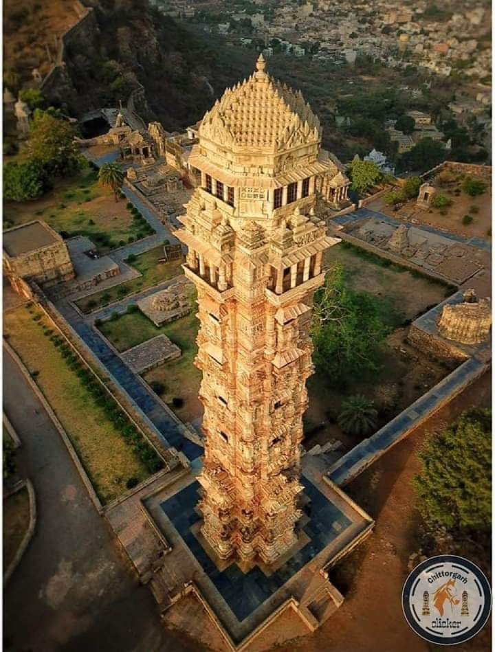
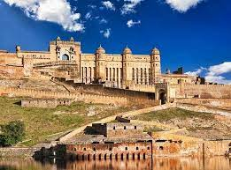

An immense mausoleum of white marble, built in Agra between 1631 and 1648 by order of the Mughal emperor Shah Jahan in memory of his favourite wife, the Taj Mahal is the jewel of Muslim art in India and one of the universally admired masterpieces of the world's heritage.

The Red Fort Complex was built as the palace fort of Shahjahanabad the new capital of the fifth Mughal Emperor of India, Shah Jahan. Named for its massive enclosing walls of red sandstone, it is adjacent to an older fort, the Salimgarh, built by Islam Shah Suri in 1546, with which it forms the Red Fort Complex.

Vijay Stambha, also known as victory tower, is a piece of resistance of Chittorgarh. It was constructed by the king of Mewar, Rana Kumbha to celebrate his triumph over the combined forces of Malwa and Gujarat led by Mahmud Khilji, in 1448. The mighty tower was constructed between the period of 1458 and 1488 and is so tall and massive that it is visible from any part of the city. Hence, the entire town can be viewed from here.
One of the top tourist attractions of Jaipur, the huge Amer Palace Fort sits atop a small hill, and is located at a distance about 11 km from the main city. The magnificent Amer Fort is an extensive palace complex that has been built with pale yellow and pink sandstone, and with white marble. The fort is divided into four main sections that are graced with their own courtyards.
